|
Ethernet Firmware
|
|
Ethernet Firmware
|
Ethernet Firmware enables multiple client drivers to run independently on the remaining cores in the system. For instance, A-cores can run HLOS like Linux or QNX, and other R5F cores can run FreeRTOS or AUTOSAR software. Client drivers communicate through the central Ethernet Firmware module for any necessary switch configuration. Once setup packet are directly steered to the designated cores based on the flow steered criteria described before.
This user guide presents the list of features supported by the Ethernet Firmware (EthFw), and describes the steps required to build and run the EthFw demo applications.
| Feature | Comments -— |
|---|---|
| L2 switching | Support for configuration of the Ethernet Switch to enable L2 switching between external ports with VLAN, multi-cast |
| Inter-VLAN routing | Inter-VLAN routing configuration in hardware with software fall-back support |
| lwIP integration | Integration of TCP/IP stack enabling TCP, UDP. |
| MAC-only | Port configuration in MAC-only mode for traffic exclusively forwarded to host port, excludes the designated port(s) from switching logic |
| Intercore Virtual Ethernet | Shared memory-based virtual Ethernet adapter communication between cores |
| Multi-core broadcast an multicast support | Multi-core concurrent reception of broadcast and multicast traffic using SW based fan-out |
| Ability to send broadcast and multicast traffic to multiple cores | |
| Remote configuration server | Firmware app hosting the IPC server to serve remote clients like Linux Virtual MAC driver |
| Resource management library | Resource management library for CPSW resource sharing across cores |
| Reset Recovery on CPSW | Support to reset CPSW and recover it back to a working state from HW lockups. |
| QoS | Support for assignment of multiple TX channels/RX flows for clients |
| Multicore Timesync | Support for multicore Timesync demonstrated between server and RTOS client. |
The multiport CPSW switch present in devices of the Jacinto family is an Ethernet peripheral shared among the different processing cores within the SoC. Ethernet Firmware acts as the owner of the CPSW switch and provides a remote configuration infrastructure for other processing cores running different operating systems.
Ethernet Firmware enables TCP/IP stack and gPTP stack, includes software and hardware interVLAN demos, as well as helper utils libraries (i.e. network statistics).
The following diagram shows the main components of the Ethernet Firmware software architecture.
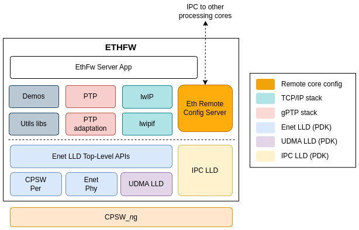
The TCP/IP stack integrated in the Ethernet Firmware is based on the open source lwIP stack enabled on top of Enet LLD.
Ethernet Firmware sets up packet classifiers to route traffic to the different remote processing cores. Routing criterias are based on the switch ingress port number or Layer-2 destination MAC address, depending on the virtual port type requested by the remote cores. Packets which don't match any of the configured classifier criteria are routed to a default UDMA flow that is owned by Ethernet Firmware.
For multicast, if the traffic is exclusively requested by a single core it can be directly steered to the designated core by programming the hardware classifier module through EthFw. When multiple cores need to receive the same multicast flow, then it is always steered to the Ethernet Firmware which plays the role of central hub that replicates and fans out. Refer to the Multicast and Broadcast Support section for more information.
Ethernet Firmware runs gPTP stack which operates either as master or slave clock based on the gPTP configurations set, supporting both software and hardware adjustments for the CPTS clock. This PTP implementation sets up CPSW ALE classifiers with PTP multicast MAC address and PTP EtherType classifier as match criteria to have PTP traffic routed to dedicated UDMA RX flow.
The remote configuration infrastructure provided by Ethernet Firmware is built using the ethremotecfg framework which uses ETHFW-IPC (EthFw abstraction layer to support IPC LLD on both Jacinto and Sitara based SoCs, please refer utils/ethfw_abstract for more details). Ethernet Firmware supports three types of messages namely, requests, responses and notifications. Requests are primarily sent by the remote clients and waits for the response from the ETHFW server. The notifications from server to client donot have any ACKs where from client to server notifies will be returned with a server ACK. Remote configuration is based on the application defined server-client protocols which can be found in */ethfw/ethremotecfg/protocol* folder. Ethernet Firmware plays the role of a server which accepts and processes commands from the remote clients and carry out operations such as attaching/detaching, registering a MAC address or IP, etc, on the client's behalf.
CPSW register configuration is carried out exclusively by Ethernet Firmware, remote cores are not expected/allowed to perform any CPSW5G/CPSW9G register access, though that is currently not enforced. Ethernet Firmware uses Enet LLD for low-level CPSW5G/CPSW9G driver support and for Ethernet PHY configuration. Enet LLD internally uses UDMA LLD for packet exchange with the CPSW switch. Along with CPSW remote configuration, it is the responsibilty of ETHFW to manage and distribute the resources among server and the remote clients.
The utilization of these resources by Ethernet Firmware on either the Main R5F 0 Core 0 or the Main R5F 0 Core 1 is as follows:
| Resource | Count | EthFw Usage (mcu2_0 OR mcu2_1) |
|---|---|---|
| TX channel | 2 |
|
| RX flow | 5 |
|
| MAC address | 1 |
|
Note: Before running Ethernet Firmware on the Main R5F 0 Core 1, make sure that you have allocated the appropriate amount of resources to the core. For more details on changing resource allocations using SysConfig tool, please refer to this e2e for more details.
UDMA TX channels are a resource especially limited as there is only a total of 8 TX channels available. So, there are 6 TX channels to be shared among the differrent remote client cores and their virtual ports.
With Ethernet Firmware's default port configuration, the following resources will be used by Linux remote client on A72 core.
| Resource | Count | Linux Client Usage |
|---|---|---|
| TX channel | 3 |
|
| RX flow | 2 |
|
| MAC address | 2 |
|
With Ethernet Firmware's default port configuration, the following resources will be used by RTOS remote client on Main R5F 0 Core 1. The same remote client will run on Main R5f 1 Core 0 if Ethernet Firmware is running on Main R5F 0 Core 1.
| Resource | Count | RTOS Client Usage |
|---|---|---|
| TX channel | 2 |
|
| RX flow | 2 |
|
| MAC address | 2 |
|
For a given remote client in general will require a pair of Tx/Rx channels and a MAC Address per virtual port.
The following diagram shows a view of the Ethernet Firmware components and the expected ownership.
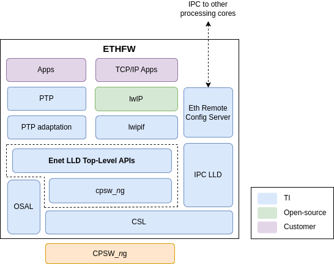
Ethernet Firmware component in SDK provides a FreeRTOS client example application running on Main R5F 0 core 1. This application showcases lwIP TCP/IP stack and multicore time synchronization built on top of Ethernet Firmware's IPC-based remote config infrastructure.
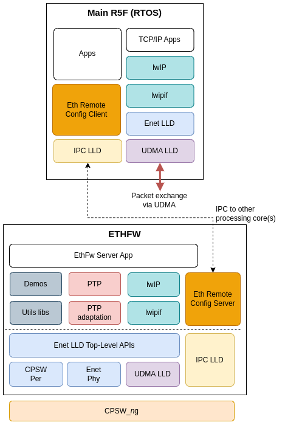
The following lwIP netifs are enabled in the RTOS client application:
The two CPSW virtual port netifs reuse the same Enet LLD based lwIP implementation.
The RTOS core attaches to the Ethernet Firmware server using the Eth Remote Config Client library which is built using ETHFW-IPC APIs can be located in */ethfw/ethremotecfg/client/* folder.
The multicore time synchronization mechanism implemented in RTOS client consists of a linear correction in software of a local timer owned by the RTOS core which is periodically synchronized with the CPTS clock via HW push event 2.
In SoCs with multiple R5F cores, system design may require virtual network support on a different R5F core, instead of Main R5F 0 Core 1. Starting from SDK 10.0, Ethernet Firmware provides RTOS client support on Main R5F 1 core 0 (mcu3_0) in all supported SoCs (i.e. J721E, J784S4 and J742S2). This is exactly the same FreeRTOS client example application which runs on Main R5F 0 core 1.
RTOS client by default is enabled for Main R5F 0 core 1. ETHFW_RTOS_MCU3_0_SUPPORT is the build flag defined in <ethfw>/ethfw_build_flags.mak to enable RTOS client on Main R5F 1 core 0. Use the following commands to build EthFw with RTOS client on Main R5F 0 core 1:
It's worth noting that RTOS client is sharing the same resources (same virtual switch/mac ports and tx channels) among both the cores (mcu2_1 and mcu3_0). Hence RTOS client can be enabled only on 1 core at a time.
TI Linux kernel provides support for the two types of CPSW client drivers, virtual MAC port and virtual switch port, through the j721e-cpsw-virt-mac driver. Both interfaces types are enabled by default in TI Processor SDK Linux.
The following diagram presents a simplified view of the main components involved in the Linux client usecase.
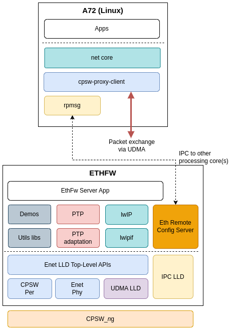
The rpmsg client driver is compatible with the ethremotecfg server side running on RTOS master core (Ethernet Firmware). This driver is used to exchange control messages with Ethernet Firmware to establish a virtual port connection.
It's important to note that the Ethernet packet exchange doesn't happen via IPC. Instead, it happens completely in hardware via UDMA TX channel and RX flow.
For further information, please refer to CPSWng_virt_mac documentation in Processor SDK Linux.
TI's baseport for QNX provides support for virtual switch port network interface through its devnp_cpsw9g driver. Virtual MAC port (MAC-only mode) is currently not supported by QNX client.
The following diagram shows a simplified view of the main components involved in the QNX client's virtual port implementation.
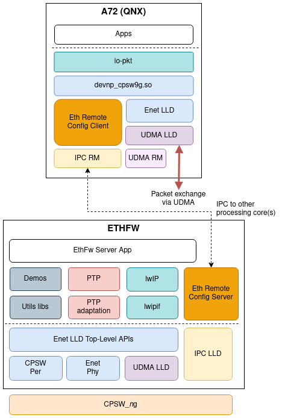
TI's devnp_cpsw9g driver implements the driver interface of the QNX networking stack (io-pkt), so the virtual MAC port network interface is exposed transparently to the user as any other native networking interface.
devnp_cpsw9g driver uses Ethernet Firmware's remote configuration infrastructure in order to attach/detach the virtual port, register its MAC address, IP address, etc. This is the same remote configuration API used by other remote clients such as RTOS core, and consequently also sits on top of the ethremotecfg framework. The lower level IPC functionality is provided by the IPC RM (QNX resmgr).
Ethernet packet exchange with the CPSW switch happens in hardware through an UDMA TX channel and RX flow, completely independent of the Ethernet Firmware. devnp_cpsw9g driver uses Enet LLD data path APIs natively to submit and retrieve Ethernet packets.
Ethernet Firmware is also able to attach to a remote client running AUTOSAR. The AUTOSAR client must use TI's MCAL Eth VirtMAC driver. This is a MCAL Eth driver with TI customizations for virtual MAC functionality.
A simplified view of the main entities involved in the AUTOSAR remote client usecase are shown in the following diagram.
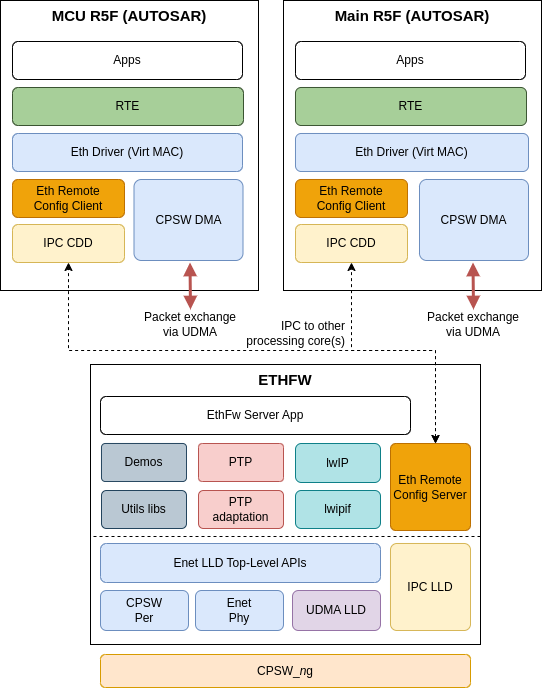
The remote core configuration is implemented on top of TI MCAL IPC CDD using the same protocol headers defined by ETHFW in ethfw/ethremotecfg/protocol folder.
Ethernet packet exchange with the CPSW switch doesn't happen via IPC, but in hardware via UDMA TX channel and RX flow.
In the current release, AUTOSAR client only supports virtual switch port. Virtual MAC port (MAC-only mode) is not supported.
Note that the AUTOSAR client in the SDK has enabled on Main R5F 0 core 1 with remote endpoint id as 28 and MCU R5F 0 core 0 with remote endpoint id as 38.
The location within the SDK directory structure of the software components which are relevant for Ethernet Firmware usecases is shown in the following figure. Note that this figure presents a consolidated view of the Ethernet Firmware and all the supported remote clients, but that doesn't mean that all clients can be supported simultaneously.
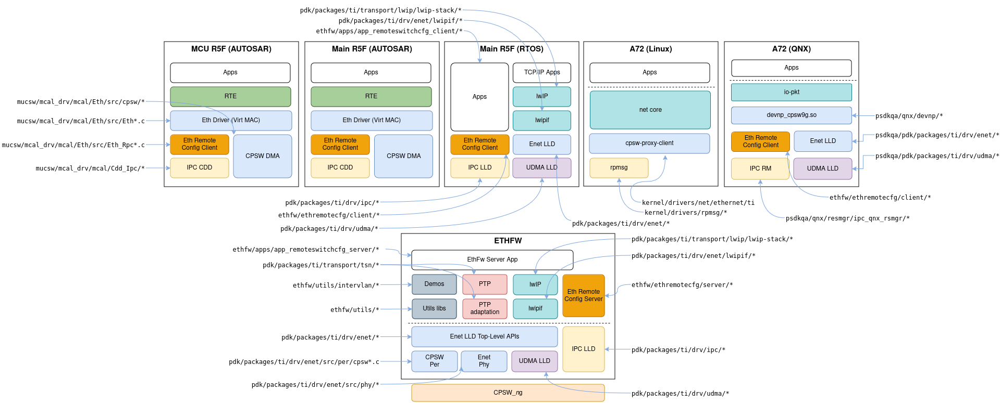
CPSW switch supports a feature called MAC-only mode which allows all incoming traffic from a given MAC port to be transferred only to the host port. This effectively excludes the MAC ports configured in this mode for rest of packet switching happening in the CPSW switch.
Starting with SDK 8.1, Ethernet Firmware has enabled MAC-only mode on selected MAC ports. To better understand the physical and logical entities involved in a system where MAC-only mode has been enabled, let's start by defining key concepts:
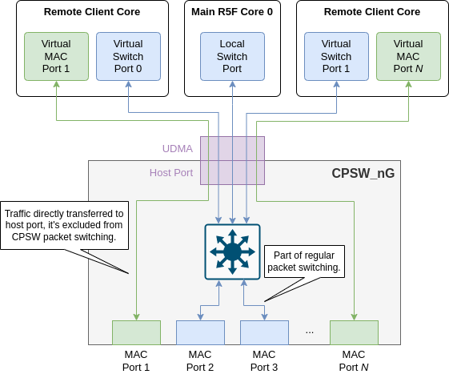
The default port configuration for J721E and J7200 are shown in J721E Port Configuration J7200 Port Configuration, J784S4 Port Configuration and J742S2 Port Configuration subsections, respectively.
The port's default VLAN for MAC ports configured in MAC-only mode is 0, and for MAC ports configured in switch mode is 3. They can be changed via EthFw_Config::dfltVlanIdMacOnlyPorts and EthFw_Config::dfltVlanIdSwitchPorts, respectively.
These are the actual hardware MAC ports of the CPSW switch. They can be configured in MAC-only or switch (non MAC-only) mode.
The MAC ports which are to be enabled by the Ethernet Firmware as passed as a parameter of EthFw_Config structure. For example, below code snippet shows a configuration which enables all 8 MAC ports in J721E CPSW9G.
This is a logical port owned by the Ethernet Firmware.
Ethernet packets are exchanged with the CPSW switch through its host port using a UDMA RX flow and a TX channel.
CPSW's default thread is set to this port's UDMA RX flow, also called default RX flow. Traffic which is not matched by any CPSW classifier gets routed to this port.
This is the traditional logical port owned by remote client cores, controlled via Ethernet Firmware's IPC-based remote API.
Ethernet packets are also exchanged with the CPSW switch through its host port using a UDMA RX flow and a TX channel.
RX traffic (to remote core) is segregated via CPSW ALE classifier with unicast MAC address match criteria. TX traffic (from remote core) is sent as non-directed packets.
It's worth noting that virtual switch ports are not directly associated with any specific hardware MAC port, as these virtual ports can receive traffic from any MAC port as long as the packets match the unicast MAC address classification criteria.
SDK 8.0 or older supported only this type of virtual port.
Virtual port (virtual switch or virtual MAC) are allocated to a specific core.
For example, below code snippet shows the virtual switch configuration:
gEthApp_virtPortCfg where virtual switch port 0 is allocated for A72 core (used by Linux or QNX client), and virtual switch port 1 is allocated for Main R5F 0 Core 1 (used by RTOS or AUTOSAR clients). Also virtual switch port 2 is allocated for MCU R5F 0 Core 0 for AUTOSAR client as well.It's worth noting that in this specific configuration virtual switch port 1 can be used by an RTOS client or AUTOSAR client, depending on the OS running on Main R5F 0 Core 1. Same with virtual switch port 0 as well.
This is also a logical port owned by remote clients and controlled via Ethernet Firmware's IPC-based remote API.
Ethernet packets are also exchanged with the CPSW switch through its host port using a UDMA RX flow and a TX channel.
RX traffic (to remote core) is segregated via CPSW ALE classifier with port match criteria. TX traffic (from remote core) is sent as directed packets.
These virtual ports are directly associated with a hardware MAC port which is configured in MAC-only mode.
Below code snippet (which is same as shown in previous section for Virtual switch port) shows a configuration where virtual MAC port 1 is allocated for A72, and virtual MAC port 4 is allocated for Main R5F 0 Core 1. It's worth noting that virtual MAC ports are only supported in Linux and RTOS client, hence no virtual MAC ports are allocated for AUTOSAR client.
The default port configuration of Ethernet Firmware can be changed to fit the specific architecture requirements of each system.
If additional ports need to be configured in MAC-only mode, one needs to follow these steps:
EthFw_Config::port config parameter.EthFw_Config::virtPortCfg config parameter. The virtual port mode must be set to ETHREMOTECFG_MAC_PORT_<n> which is an enum of type EthRemoteCfg_VirtPort.On the other hand, if the new MAC port or an existing one needs to be changed from MAC-only mode to switch mode, one can simply remove it from the EthFw_VirtPortCfg array.
Resource availability and allocation must be taken into account when adding additional virtual ports, not only in MAC-only mode but also in switch mode. Each virtual port will require one UDMA TX channel and one UDMA RX flow, both are resources partitioned for each core in the SoC, hence repartitioning might be needed. Additionally, each virtual port will require a MAC address which is also a limited resource.
Ethernet Firmware relies on Enet LLD's utils library to populate its MAC address pool (see EnetAppUtils_initResourceConfig()). The MAC address pool is populated with addresses read from EEPROMs located in the different expansion boards in TI EVM. Note that a static MAC address pool is used as a workaround in TI EVMs for cases where I2C bus contention could happen (i.e. when integrating with Linux). It's expected that the MAC address pool population mechanism is adapted when integrating Ethernet Firmware to different platforms.
There are four MAC ports enabled by default in Ethernet Firmware for J721E SoC. These are the RGMII MAC ports in GESI board.
Two MAC ports are configured in MAC-only mode and allocated for A72 (Linux) and Main R5F Core 1 (RTOS) usage. The remaining two MAC ports are configured in switch mode.

The following table shows the full list of MAC ports in J721E EVM, the board they are located and their MAC mode.
| MAC Port | PHY Addr | Board | MAC mode |
|---|---|---|---|
| MAC Port 1 | 12 | GESI | MAC-only |
| MAC Port 2 | 16 | QSGMII | Switch Port |
| MAC Port 3 | 0 | GESI | Switch Port |
| MAC Port 4 | 3 | GESI | MAC-only |
| MAC Port 5 | 17 | QSGMII | Switch Port |
| MAC Port 6 | 18 | QSGMII | Switch Port |
| MAC Port 7 | 19 | QSGMII | Switch Port |
| MAC Port 8 | 15 | GESI | Switch Port |
All the four MAC ports of CPSW5G are enabled by default in Ethernet Firmware for J7200 SoC. These are the four QSGMII MAC ports in QSGMII (QpENet) expansion board.
Two MAC ports are configured in MAC-only mode and allocated for A72 (Linux) and Main R5F Core 1 (RTOS) usage. The remaining two MAC ports are configured in switch mode.

The following table shows the full list of MAC ports in J7200 EVM, the board they are located and their MAC mode.
| MAC Port | PHY Addr | Board | MAC mode |
|---|---|---|---|
| MAC Port 1 | 16 | QSGMII | MAC-only |
| MAC Port 2 | 17 | QSGMII | Switch Port |
| MAC Port 3 | 18 | QSGMII | Switch Port |
| MAC Port 4 | 19 | QSGMII | MAC-only |
J784S4 EVM provides two Enet expansion connectors (ENET-EXP-1 and ENET-EXP-2) where two expansion boards can be connected. QSGMII (QpENet) board can be connected to either expansion connector, but two QSGMII boards cannot be connected simultaneously due to board limitation.
Only four MAC ports of CPSW9G are enabled by default in Ethernet Firmware for J784S4 SoC. These are the four QSGMII MAC ports in QSGMII (QpENet) expansion board when connected in slot 1 (ENET-EXP-1).
Two MAC ports are configured in MAC-only mode and allocated for A72 (Linux) and Main R5F Core 1 (RTOS) usage. The remaining two MAC ports are configured in switch mode.

The following table shows the full list of MAC ports in J784S4 EVM, the board they are located and their MAC mode.
| MAC Port | PHY Addr | Board | MAC mode |
|---|---|---|---|
| MAC Port 1 | 16 | QSGMII | MAC-only |
| MAC Port 3 | 17 | QSGMII | Switch Port |
| MAC Port 4 | 18 | QSGMII | MAC-only |
| MAC Port 5 | 19 | QSGMII | Switch Port |
MAC ports 2, 6, 7 and 8 are not enabled.
J742S2 EVM E1 version does not provide any Enet board/connector. To test EthFw functionality (ETHFW J742S2 Testing) four MAC ports of CPSW9G are enabled by default in Ethernet Firmware for J742S2 SoC.
Two MAC ports are configured in MAC-only mode and allocated for A72 (Linux) and Main R5F Core 1 (RTOS) usage. The remaining two MAC ports are configured in switch mode.
The following table shows the full list of MAC ports in J742S2 EVM, the board they are located and their MAC mode.
| MAC Port | PHY Addr | Board | MAC mode |
|---|---|---|---|
| MAC Port 1 | 16 | QSGMII | MAC-only |
| MAC Port 3 | 17 | QSGMII | Switch Port |
| MAC Port 4 | 18 | QSGMII | MAC-only |
| MAC Port 5 | 19 | QSGMII | Switch Port |
MAC ports 2, 6, 7 and 8 are not enabled. Note that J742S2 CPSW supports up to 4 ports. To maximize pin muxing flexibility, the system designer can choose based on any available ports, but must limit the total number of ports used to 4 or less.
As J742S2 EVM E1 version does not provide any Enet board/connector, NO functionality test has been done on J742S2-EVM as there is no external port to transfer or receive data.
EthFw (built for J742S2) for CPSW_9G is validated on J784S4-EVM post applying this patch in PDK to configure SERDES_2.
Starting with SDK 8.1, the EthFw integrates Inter-core Virtual Ethernet driver which allows shared memory based Ethernet frame exchange between cores. This is modelled as virtual Ethernet adapter at each end.
Inter-core virtual network uses a star topology with the R5F_0 master core (EthFw server) acting as the central hub. Each node (core) in the network communicates directly with the master while communication between other nodes (A72 and R5F_1) is routed through the master. In addition to the Enet LLD network interfaces used to communicate with the CPSW switch, each participating core creates an inter-core network interface, which allows it to communicate with another core using standard TCP/IP protocol suite. This is aimed at modeling Ethernet-like communication between software running on-chip processing cores (R5Fs, A72). Traffic external to the SoC is handled through CPSW hardware IP that can steer traffic based on traffic flows directly to the respective cores.
The topology diagram below shows the integration of inter-core virtual Ethernet in Ethernet Firmware.
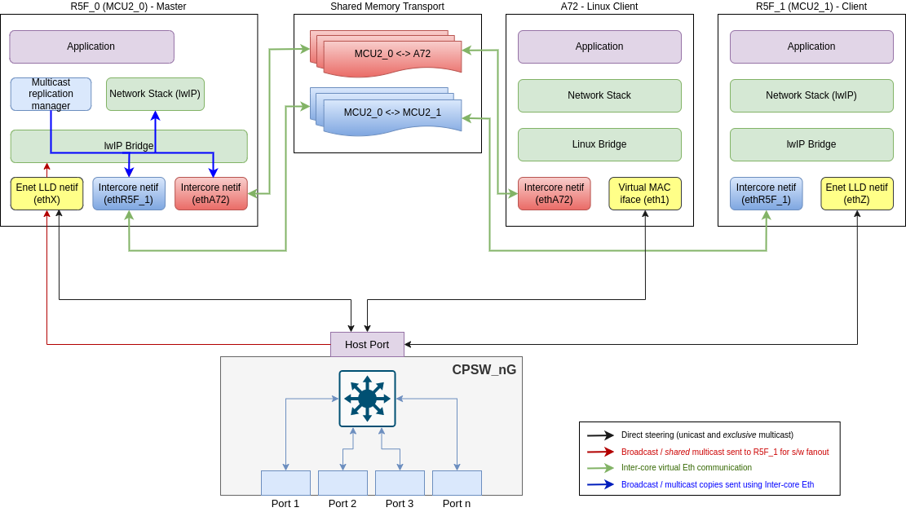
The main entities shown in this diagram are listed below:
Broadcast and shared multicast packets are always sent to the R5F_0 master core using the default flow shown by the red arrow. The master core creates copies of such packets in software which is shown by the blue arrows and sends them out to other cores using the inter-core Ethernet links shown by green arrows.
On RTOS cores, the inter-core virtual Ethernet driver provides a standard lwIP netif (network interface) to the application using which the application can exchange Ethernet packets with another core. The inter-core netifs are seamlessly integrated in EthFw (client and server) using lwIP bridgeif interface which allows the inter-core netifs to co-exist along-side the Enet LLD native or virtual client interface on the server and client respectively. The bridgeif provides a single unified network interface using which the application communicates with the CPSW switch or other cores without worrying about which netif to use for sending and receiving packets.
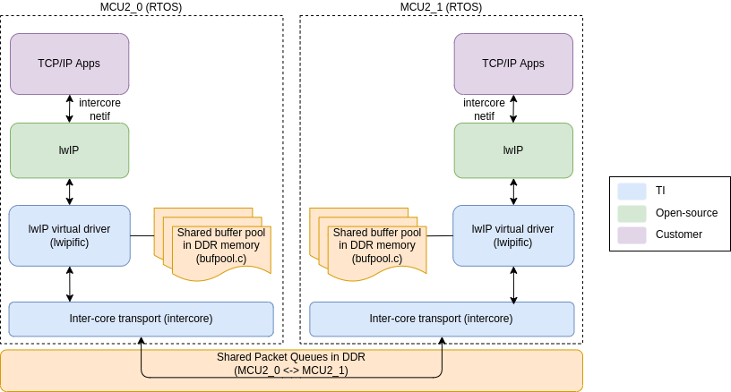
Inter-core virtual Ethernet can also be used on Linux through a user space demo application provided in the SDK. This demo application creates a Linux TAP networking device and passes Ethernet packets back and forth between the TAP device and the inter-core transport shared queues to communicate with the inter-core netif on EthFw server. The TAP network interface can be bridged with the Enet LLD client driver interface to provide a single unified network interface to the network stack, just like the R5F cores. The bridge will automatically select the correct interface to send the packets based on the destination IP address.
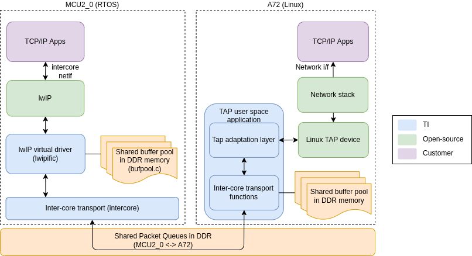
The EthFw server acts as the central hub of the inter-core virtual network, therefore it instantiates two inter-core netifs, one to communicate with the EthFw R5F remote client and another for the A72 (Linux) remote client. The inter-core netifs, along-with the Enet LLD netif are all added to the lwIP bridgeif which provides a single unified interface to the network stack/application. Refer to Topology and Design overview diagram which shows the various netifs, including the lwIP bridge, created on the R5F_0 server core.
Note: The network stack / application sees only a single set of IP and MAC addresses which belong to the bridgeif. The individual netifs, including the Enet LLD netif, are neither visible to the network stack / application, nor do they get IP or MAC addresses.
Please refer to the following code in <ethfw>/apps/app_remoteswitchcfg_server/main.c to understand how these netifs are instantiated and added to the bridge:
Note: Checksum offload is enabled by default for all Jacinto devices in both Tx & Rx. In case of Inter-core virtual path (via lwIP bridge) checksum is validated and computed in software, as it will not involve any hardware port for transmission.
The EthFw client on R5F_1 instantiates only one inter-core netif to communicate directly with the EthFw server on R5F_0. Similar to the EthFW server, an lwIP bridgeif is created and both the inter-core netif and the Enet LLD virtual netif are added to the bridge to provide a unified network interface to the application.
Refer to Topology and Design overview diagram which shows the various netifs, including the lwIP bridge, created on the R5F_1 client core.
Note: The network stack / application sees only a single set of IP and MAC addresses which belong to the bridgeif. The individual netifs, including the Enet LLD netif, are neither visible to the network stack / application, nor do they get IP or MAC addresses.
Please refer to the following code in <ethfw>/apps/app_remoteswitchcfg_client/main.c to understand how these netifs are instantiated and added to the bridge:
Inter-core virtual Ethernet can also be used on the A72 Linux remote client, however lwIP is not used on Linux so we cannot use the inter-core virtual driver directly. Instead, the adaptation layer between the Linux network stack and the inter-core transport is implemented in a user space demo application called TAP, which is provided under <ethfw>/apps/tap/. This user space application creates a Linux TAP networking device and passes Ethernet packets back and forth between the TAP device and the inter-core transport shared queues to communicate with the inter-core netif on EthFw server. Further, the TAP network interface can be bridged with the Enet LLD client interface to provide a single unified interface to the network stack, just like the R5F cores.
Note: The TAP driver implementation is provided as a reference only to demonstrate and test the intercore functionality in Linux. It comes with limited feature support, such as polling mode operation only, basic packet handling.
Please refer to the following code in <ethfw>/apps/tap/tapif.c:
VEPA is supported on J784S4 and J742S2 only, starting from SDK 9.1. EthFw provides support to enable VEPA (Virtual Ethernet Port Aggregator) functionality with CPSW capable of multihost data flow. Multihost is a CPSW ALE feature that enables packets to be sent and received on host port. Multihost is the foundational feature to support VEPA.
There are two distinctive data paths to consider in the intercore communication: unicast, and multicast/broadcast. The former only involves packet forwarding from source core to destination core, while the latter involves packet duplication in addition to forwarding.
For unicast traffic, inter-core virtual network described in section Inter-core Virtual Ethernet via Shared Memory Transport uses R5F_0 master core (EthFw server) acting as a hub, where each node (core) in the network communicates directly with the master. Conversely, in VEPA based intercore, direct communication between other nodes (i.e. A72 and R5F_1) is NOT routed through the master anymore as ALE multihost and classifier makes it possible to forward packets directly between cores without EthFw intervention.
For multicast/broadcast traffic, whenever broadcast or shared multicast packets reach EthFw server, software duplicates the packet, tags it with a private VLAN and sends the packets back to CPSW. Each participating core has its own unique private VLAN through which packet forwarding happens. The ALE classifiers set up by EthFw use the private VLAN id as a match criteria to route traffic exclusively to the relevant core, hence the need of having one private VLAN per participating core. The private VLANs are set up with untagging on egress, so it's transparent for the receiving core as packets will be received without the private VLAN tag.
VEPA based implementation is a better alternative than shared memory transport approach as it's transparent to remote cores and doesn't require additional shared memory based interfaces. It also provides better throughput as packet forwarding is always via CPSW hardware, with packet duplication being the only part being done in software.
It's worth noting that the VEPA implementation can coexist seamlessly with the mechanism used to steer traffic from external ports to RX flows of the respective cores based on destination MAC address.
The topology diagram below shows the integration of inter-core virtual Ethernet with VEPA in Ethernet Firmware.
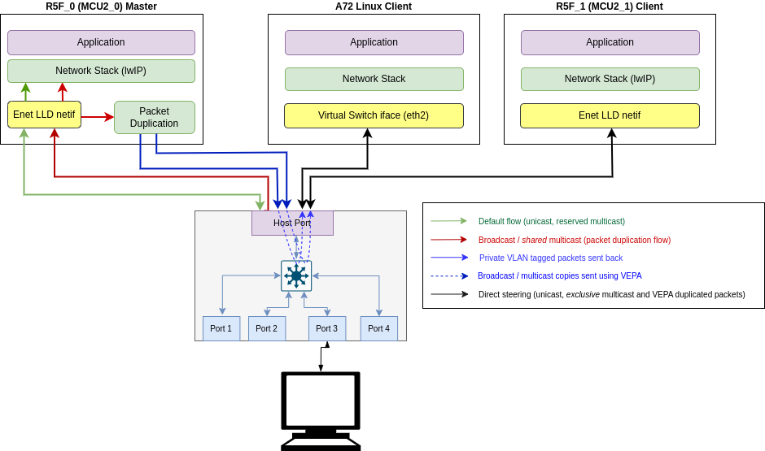
The main entities shown in this diagram are listed below:
Note: Refer to Inter-core Virtual Ethernet communication with VEPA to get detailed description of various data paths/flows.
Ethernet Firmware server creates ALE policer entry based on private VLAN associated to each registered client. This ensures that when a private VLAN tagged packet comes from packet duplication function it reaches the relevant registered client. Private VLANs are configured by Ethernet Firmware based on application's settings related to the VLAN ids to use.
Ethernet Firmware server registers multicast MAC addresses that need to be forwarded to remote clients. An ALE entry and ALE policer entry is added for each multicast address so that when multicast packets arrive, they are routed to secondary dedicated flow for packet duplication allocated at init time as shown in red arrows. When a multicast packet whose MAC address is registered comes on secondary dedicated flow, it will be passed to a VEPA specific packet duplication handle function, which then calls EthFwVepa_sendRaw() function to send a copy of the multicast packets to all relevant remote cores.
Note: Unicast and exclusive multicast packets to EthFw or remote cores reach directly via dedicated flow as shown in black arrows.
Please refer to the following code in <ethfw>/ethremotecfg/server/include/ethfw_vepa.c to understand how packets are tagged with private VLAN and sent back to host port
Please refer to the following code in <ethfw>/apps/app_remoteswitchcfg_server/main.c to understand how application can configure VEPA configurations (i.e. private VLAN associated to each virtual switch port)
Note:
Starting with SDK 8.1, the Ethernet firmware supports client cores to receive multicast and broadcast traffic.
Broadcast support is automatically enabled through inter-core virtual Ethernet mechanism which allows sending broadcast traffic to all the client cores, provided that inter-core virtual Ethernet is enabled on that client.
For multicast support, a new multicast filter API is provided by EthFw which allows client cores to subscribe-to/unsubscribe-from multicast addresses. The Ethernet Firmware differentiates between two types of multicast addresses:
Note that the cores requesting a multicast address do not need to know if a particular multicast address is shared or exclusive. This accounting is handled by the EthFw server and is completely transparent to the requesting client core.
Following are the APIs which the multicast filter commands internally use:
EthFwMcast_init(): Initializes multicast support by extracting shared and reserved multicast configurations from the passed configuration parameter. Also populates the port mask for the switch ports and MAC only ports.EthFwMcast_filterAddMac(): Adds a shared or an exclusive multicast address to ALE table for a client. Will return an error if reserved multicast address is passed. Also returns an error if a client tries to add an exclusive multicast address already in use.EthFwMcast_filterDelMac(): Will delete an exclusive or a shared multicast entry from the ALE table.EthFwMcast_printTable(): Prints the ALE table including the MAC address, port mask, vitual port mask and number of clients registered to a particular multicast address(RefCnt).Shared multicast allows multiple client cores to subscribe to the same multicast address. To support this, EthFw maintains a list of pre-defined multicast addresses which are treated as shared.
Please refer to the following code in <ethfw>/apps/app_remoteswitchcfg_server/main.c:
While updating the list with more entries, we need to update the value ofETHFW_SHARED_MCAST_LIST_LEN in the ethfw/ethremotecfg/server/include/ethfw_mcast.h file. By default the length is 8.
Exclusive multicast addresses are allocated to only one core at any given time and the corresponding multicast traffic is routed to that core directly using a dedicated hardware flow.
By default the number of exclusive multicast addresses we can have in ALE table is 32. In order to update this value, we need to update the value of macro ETHFW_EXCLUSIVE_MCAST_LIST_LEN in the ethfw/ethremotecfg/server/include/ethfw_mcast.h file. Increasing this number will allow us to change the maximum number of exclusive multicast addresses that can be added to the table. Back To Top
Reserved multicast addresses are exclusive multicast addresses that are allocated only to the core running Ethernet Firmware. Any other core requesting for a reserved multicast address will get a failure.
PTP-related multicast addresses are defined as reserved multicast addresses in Ethernet Firmware's default configuration. This is needed because Ethernet Firmware runs the PTP stack and is the sole destination of PTP packets.
While updating the list with more entries, we need to update the value ofETHFW_RSVD_MCAST_LIST_LEN in the ethfw/ethremotecfg/server/include/ethfw_mcast.h file. By default the length is 4.
VLAN support is split in two parts: VLAN creation/configuration and join/leave operations from remote clients.
VLANs are created and configured in a static or dynamic manner. For static VLANs, they are exclusively set by to Ethernet Firmware. Remote clients cannot create again these static VLANs, they can only join or leave the statically configured VLANs.
Parameters such as VLAN id, member lists (physical and virtual ports), registered and unregistered multicast flood mask and untag mask are required in order to set up static VLANs on the Ethernet Firmware server side.
The code snippet below shows the static configuration of VLAN 1024, with MAC ports 2 and 3 as members of the VLAN, and virtual switch ports 0, 1 and 2 as virtual members.
For dynamic VLAN support, remote clients can call directly JOIN_VLAN and LEAVE_VLAN commands without any static configuraton done in Ethernet Firmware. - For dynamic VLANs, portmask is set to default all switch ports that are enabled, this is done to be compliant with a typical linux interface. This also ensure no ABI changes for ethremotecfg. For disabling forwarding to all switch ports set dVlanSwtFwdEn flag to false.
Clients are requested to still allocate static entries when they want to maintain strict behaviour in forwarding rules.
The updated implementation of VLANs handling is done in consideration to save more ALE entries and classifiers.
Presently the default VLAN id for MAC only ports is 0 and for switch ports is 3. For host port the default VLAN id is 1. The VLAN IDs 0, 1 and 3 must be treated as reserved VLANs and no application should use them.
The macros which define these default VLAN IDs must not be edited and any change to the default VLANs must be done by updating the dfltVlanIdMacOnlyPorts and dfltVlanIdSwitchPorts values declared in the file ethfw/ethremotecfg/server/include/ethfw.h. Please refer to ethfw/ethremotecfg/server/src/ethfw_api.c to understand usage of both dfltVlanIdMacOnlyPorts and dfltVlanIdSwitchPorts.
The default VLAN IDs for MAC only, switch and host port are mentioned in the following macro definitions of the */ethfw/ethremotecfg/server/src/ethfw_api.c* file:
No BV* to be added in ALE entry, where B - broadcast address and V* is VLAN requested to be joined. Only U1 classifier to be added, no U1V* based classifier, where U1 - Unicast address of client, V* VLAN requested to be joined. Only V* entry in ALE, where V* is VLAN requested to be joined.
This will allow U1V^ go to all clients, where V^ is registered VLAN by other client, unknown VLAN will be dropped. To tightening this behaviour got more control of V^, recommended to use classifier.
No BV* entry in ALE, where B - broadcast address and V* is VLAN requested to be joined by virtual clients. No Classifier for broadcast entry.
No BV* entry in ALE, where B - broadcast address and V* is VLAN requested to be joined by virtual clients. Classifier only based on B, not VLAN based.
Multicast packets will be routed to EthFw default flow without honouring VLANs as lwip bridge cannot differentiate between tagged and untagged packets. Packets will then be re-directed to all clients by the lwip bridge.
Multicast packets will be routed to VEPA flow where software (VEPA Table) will take care of packet forwarding based on VLANs and only the required recipient will get VLAN tagged packets.
Post VLAN join, clients are required to update the VEPA table with MV* entry by calling ETHREMOTECFG_CMD_ADD_FILTER_MAC commands in order to recieve this traffic.
Post VLAN leave, client are required to delete MV* from VEPA table by calling ETHREMOTECFG_CMD_DEL_FILTER_MAC command to delete VLAN MV entry from VEPA table and ALE entry for M.
We are stopping multiple clients to join same exclusive multicast address M irrespective of VLAN. In case when the same client registers M in a different VLAN, we are allowing the same client to register M with different VLANs. It is worth noting that M can be registered with different VLAN V1 and V2 by same client C1 only, if another client C2 tries to register M with V3 (totally different VLAN) then that request will result an error. But this will allow MV^ go same client C1, where V^ is registered VLAN by any client (need not same), unknown VLAN will be dropped.
For more information about VLAN configuration, please refer to the VLAN API Guide.
Remote clients cannot create VLANs, but they can join or leave any of the VLANs created by Ethernet Firmware through remote commands: JOIN_VLAN and LEAVE_VLAN.
The remote client must be a member of the VLAN in order to be able to successfully join the VLAN. The virtual port membership is set through virtMemberMask parameter in the VLAN configuration at VLAN creation time on Ethernet Firmware server side.
Note: When multiple remote clients join different VLAN and we send a unicast packet of client_1's mac address say M1 with another client_2's VLAN say V2, then still packet will be forwarded to client_1. This has been taken as a known limitation so that we use less number of ALE and Classifier entires out of box. Note that not all VLAN tagged packets will be received by remote clients. Unicast packets with a VLAN registered by any client will be received by remote clients. Unknown VLAN tagged packets will still not be received by remote clients. Customer can add their own logic on top of current implementation for tighter packet forwarding.
Starting with SDK 9.1, Ethernet Firmware supports a mechanism to detect hardware lockups, reset CPSW and recover it back to a functioning state. A monitor task periodically monitors the status of CPSW to detect for any hardware lockups. In the current implementation, the recovery process is triggered upon the detection of RX bottom of FIFO drops on any MAC port, but this can be extended to user specific cases and other types of lockups.
If the nature of the lockup condition is such that it cannot be recovered by any other means, Ethernet Firmware has to resort to resetting CPSW on-the-fly, while the rest of the SoC remains running. CPSW will lose its context (register state and logic) during reset, so Ethernet Firmware will save and restore the context. More details about the recovery flow are presented in the following section.
CPSW recovery process performed on Ethernet Firmware is shown below:
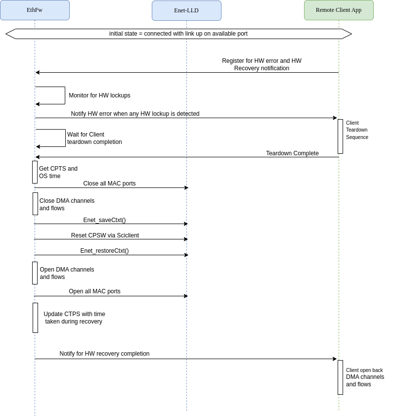
ETHREMOTECFG_NOTIFY_HWERROR notification to all clients, waits for clients to take action (perform DMA tear-down). Ethernet Firmware will remain in this state until it receives DMA tear-down confirmation from all its clients, which clients do by sending ETHREMOTECFG_CMD_TEARDOWN_COMPLETION.Enet_saveCtxt(), which will save the state of CPSW submodules such as MDIO, ALE, CPTS, host port, etc.Enet_restoreCtxt(). Which restores the context previously saved via Enet_saveCtxt().ETHREMOTECFG_NOTIFY_HWRECOVERY_COMPLETE notification to all clients. Clients can proceed to reopen their channels and flows.Remote clients play a key role in making CPSW recovery successful and themselves being able to continue using Ethernet after recovery. Clients are required to tear-down their DMA resources (channels, flows) as this will prevent stale states in UDMA and interconnect post CPSW reset.
All remote clients are required to implement the following steps in order to participate in CPSW recovery:
If CPSW recovery is enabled, it's mandatory that all clients implement the requirements described above.
During reset recovery, CPTS needs special handling as CPSW will not be aware of the time for which it was down when reset was performed. This will affect CPTS time and can lead to CPTS sending out incorrect time out other nodes in the network. To mitigate this, the EthFw does below list of steps:
T4 = T0 + (T2 - T1)*1000U (convert to nanoseconds))In current implementation of CPSW context save and restore, the MAC port context is not saved as MAC ports are expected to be closed before Enet_saveCtxt(), as shown in step 4 above. With respect to PHY, the state of PHY being alive or linked is not saved. Similar to MAC ports, PHYs are expected to be closed before Enet_saveCtxt() is called. Both, MAC ports and PHYs, will be reconfigured when application explicitly re-enables the required ports during last stage of CPSW recovery.
Starting with SDK 9.2, Ethernet Firmware supports QoS mechanism via assignment of multiple TX channels/RX flows for clients. QoS helps in prioritizing one traffic over the other among multiple/same clients to external ports (TX channels). This helps in offering dedicated bandwidth, lesser delay, controlled jitter and low latency on higher priority channels. QoS helps in traffic segregation from external ports to multiple/same clients (RX flows) based on the custom policers (ALE Classification) added for each RX flow.
Note: Ethernet Firmware is providing information of the allocated resources (numTxChan and numRxFlows) to the clients in response of ATTACH command. Clients can then call ALLOC_TX/ALLOC_RX (as many times as numTxChan/numRxFlows allocated) with relative channel/flow number to allocate the resource. At the same time there is NO change in ATTACH_EXT command neither in request nor in response. ATTACH_EXT command still remains as an extended function of ATTACH command with doing exactly 1 ALLOC_RX, 1 ALLOC_TX and 1 ALLOC_MAC for any client.
QoS helps in prioritizing one traffic over the other among multiple/same clients to external ports (TX channels). Ethernet Firmware is mapping specific priority TX channels to virtual clients removing the first come first serve TX channel assignment. Configuration can set one or more TX channel with varying absolute TX channel priority to a virtual client.
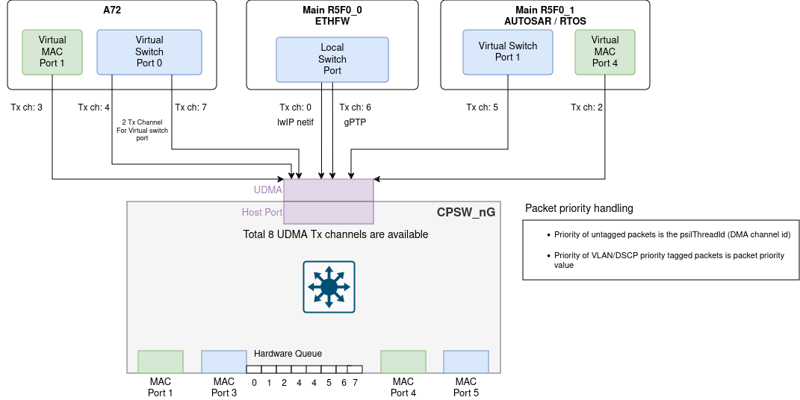
Below code snippet show how static allocation of TX channels is achieved for each individual virtual client.
Note: Any 2 virtual ports should not have same TX channel allocated to them (should be ensured by the application).
Multiple classifiers (ALE Classification) can match on a single packet. For example a classifier can be enabled to match on priority while another classifier could match on IP address. The ALE will return to the switch the highest classifier entries thread ID that matched with an enabled thread ID number. This could be used to further host routing of the packet.
QoS helps in traffic segregation from external ports to multiple/same clients (RX flows) based on the custom policers added for each RX flow. What it means that when a packet is egressed from host port then custom policer will be matched to put the packet onto a specific RX flow. In this way traffic segregation is achieved with the help of policers.
For example: Suppose we have 3 RX flow allocated to A72 core. We can have a policer to match that this specific IP (say: 138.24.190.64) should always redirect to A72 core's flow 2. Refer to this RX QoS test on linux client on J7200 section for more deails.
Ethernet Firmware provides infrastructure to add static custom policers by the clients on each of the allocated RX flow. To create static custom policers on RX flows, clients need to give flow information (i.e. numCustomPolicers and customPolicersInArgs) for each allocated flow. Each flow can have multiple custom policers given in customPolicersInArgs. These policers are created at the moment client allocates those specific RX flow using ALLOC_RX command.
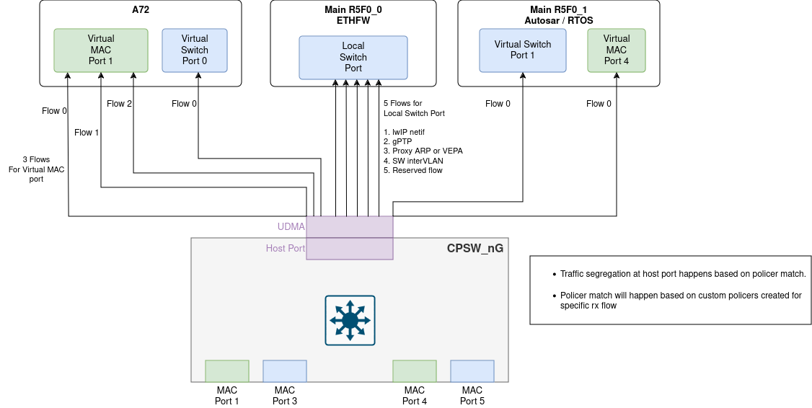
Below code snippet show how static allocation of RX flows with custom policers can be achieved for each individual virtual client.
The ALE has a number of configurable policer engines. Each policer engine can be used for classification. Each policer can be enabled to classify on one or more of any of the below packet fields for classification.
Only difference between a primary flow and an extended flow is that Ethernet Firmware restricts existing commands (i.e. REGISTER_MAC, DEREGISTER_MAC, SET_RX_DEFAULTFLOW, DEL_RX_DEFAULTFLOW and ADD_FILTER_MAC) to be called only on primary flow. Clients call ALLOC_RX with relative flow number to allocate the resource. To allocate a primary flow, relative flow number provided by the client should be 0U. Similarly to allocate any extended flow, relative flow number vary from 1U to numRxFlows - 1U
Note: Number of custom policers per RX flow should be <= ETHREMOTECFG_POLICER_PERFLOW
Ethernet Firmware supports two types of trace levels:
ETHFW_CFG_TRACE_LEVEL and determines the traces that are built in Ethernet Firmware libraries, both for server (ethfw_remotecfg_server) and client (ethfw_remotecfg_client).EthFwTrace_setLevel() function and can be set to the build-time trace level or lower (less verbose levels).Trace functionality must be initialized via EthFwTrace_init() before any other Ethernet Firmware API, either on server or client sides.
Traces can be optionally timestamped if the trace format is ETHFW_CFG_TRACE_FORMAT_DFLT_TS, ETHFW_CFG_TRACE_FORMAT_FUNC_TS, ETHFW_CFG_TRACE_FORMAT_FILE_TS or ETHFW_CFG_TRACE_FORMAT_FULL_TS. Application must pass a timestamp provider at init time that returns timestamps in microseconds.
Ethernet Firmware also supports generation of unique error codes in its server library (ethfw_remotecfg_server) which are 32-bit values composed of file id, line number and status value. Application must pass a callback function (EthFwTrace_Cfg::extTraceFunc) in order to get unique error codes. Note that a number of error codes will be reported as the error cascades back through the call sequences. This functionality can be used for tracing purposes in error diagnostics.
The code snippet below shows trace feature initialization with FreeRTOS based timestamping and a unique error code callback function.
For more information, refer to the EthFwTrace API guide.
Port mirroring is used to send a copy of network packets seen on one port to another port for debugging or network monitoring purposes. Network engineers or administrators can use port mirroring to analyze and debug data or diagnose errors on a network. It can help to keep a track on network performance and get alert when problems occur.
Port mirroring is disabled by default in EthFw. User will need to modify and rebuild the EthFw binaries if they need to enable port mirroring.
CPSW ALE supports three mirroring modes: destination port, source port and table entry. Refer to Section 12.2.2.4.6.1.14 for more details in TRM.
Destination port mirroring allows packets from any ingress port or trunk which ends up switching to a particular egress destination port or trunk to be mirrored to yet another egress destination port or trunk. For example any traffic from any port that is switched to port A can be also mirrored to port B.
Source port mirroring allows packets received on any enabled ingress source port or trunk to be switched to the mirror egress port as well as the actual egress destination ports. For example traffic received on ingress port A can be switched to egress port B as well as the intended egress destination port.
Table entry mirroring allows for any ALE entry that matches on ingress to be switched to the egress destination as well as the actual egress destination. For example all traffic with destination MAC M can be mirrored to port B. That is any traffic with destination MAC M will be mirrored.
Note: The mirror port need not be a member of the VLAN ID it is mirroring, the ALE will forward traffic to the mirror port after ingress and egress filters are applied.
Heartbeat mechanism in EthFw is enabled for remote clients to query the operational state of EthFw. The status of EthFw can be queried by remote clients via ETHREMOTECFG_CMD_GET_SERVER_STATUS cmd. EthFw can be in one of the following operational states (ETHREMOTECFG_SERVERSTATUS_UNINIT , ETHREMOTECFG_SERVERSTATUS_READY, ETHREMOTECFG_SERVERSTATUS_RECOVERY and ETHREMOTECFG_SERVERSTATUS_BAD). A state diagram showing EthFw's transition to different possible states is shown below.
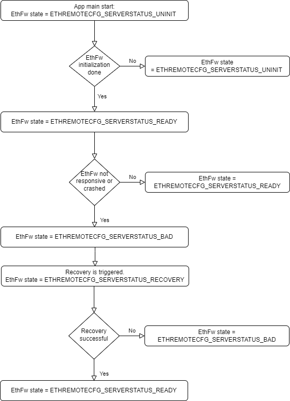
Remote Clients can implement a mechanism to periodically monitor the status of EthFw. The ETHREMOTECFG_CMD_GET_SERVER_STATUS cmd will return the current state of EthFw EthRemoteCfg_ServerStatus. Reference of heartbeat mechanism on client core can be taken from R5F RTOS Client integration.
If EthFw is not responsive and fails to respond to client's commands, a timeout mechanism is implemented on CPSW proxy client which will end the wait loop for response and return ETHREMOTECFG_SERVERSTATUS_BAD status to client application via callback function when the configured timeout period for cmd expires.
Multocore Timesync is enabled starting SDK 11.0, it demonstrates synchronising a system clock (GTC/GP Timer) with CPTS Clock. The feature is demonstrated between EthFw server and RTOS client. The block diagram of the feature is shown below:
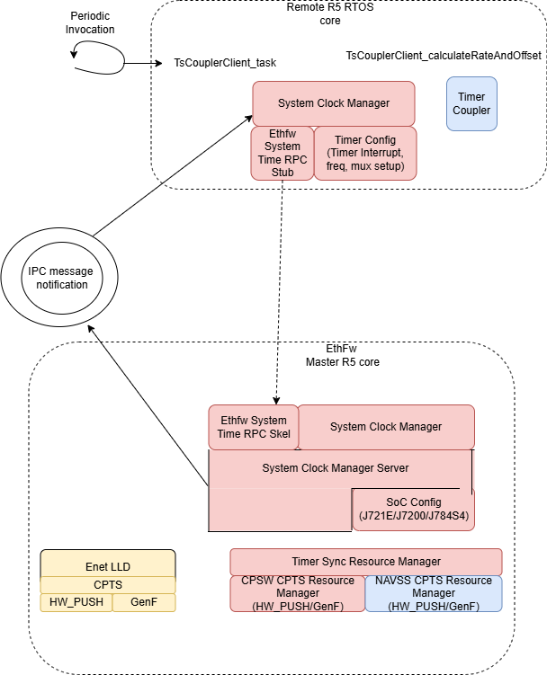
The Steps involved in Multicore Timesync:
The Remote Client initialises the Timesync Coupler Client module with the choice of Timer intended to be use. A GTC or a GP Timer are the options available.
The Remote Client that needs to allocated a CPTS HW push instance via ETHREMOTECFG_CMD_ALLOC_CPTS_HW_PUSH cmd. The EthFw server maintains the static allocation for CPSW PUSH instances distributed across different cores. On successful allocation, THE CPTS instance is used by Remote client to query CPTS Time.
The Remote Client based on the intended Timer type and allocated CPTS HW Push instance needs to configure the timesync router, this is done via ETHREMOTECFG_CMD_REGISTER_REMOTE_TIMER cmd.
Baased on the selected Timer type. the Remote client will set the GTC push event value for GTC Timer Type. For GP Timer type, the intented Timer handle is created and PWM is triggered.
On trigger of PWM, the EthFw server receives a CPTS notification of the PWM generated time, which is passed to intented Remote clients via IPC messages.
On reception of CPTS Time, Remote client maintains a Software Tuple of Remote Time and System Time and maintains the relationship to calculate the rate and offset needed to get the synchronized time.
There is a demo test showcasing the accuracy on synchronization between local calculated synchronized time vs Remote time. Enable the macro ETHFW_MTS_DEMO_TEST to run the demo test. The log reference of demo test on RTOS client is given below:
The EthFw demos showcase the integration and usage of the Ethernet Firmware which provides a high-level interface for applications to configure and use the integrated Ethernet switch peripheral (CPSW5G/CPSW9G).
The following sample applications are key to demonstrate the capabilities of the CPSW9G/CPSW5G hardware as well as the EthFw stack.
| Demo | Comments -— |
|---|---|
| L2 Switching | Configures CPSW5G/CPSW9G switch to enable switching between its external ports |
| L2/L3 address based classification | Illustrates traffic steering to A72 (Linux) and R5F (RTOS) based on Layer-2 Ethernet header. iperf tool and web servers are used to demonstrate traffic steering to/from PCs connected to the switch |
| Inter-VLAN Routing (SW) | Showcases inter-VLAN routing using lookup and forward operations being done in SW (R5F). It also showcases low-level lookup and forwarding on top of Enet LLD |
| Inter-VLAN Routing (HW) | Illustrates hardware offload support for inter-VLAN routing, demonstrating the CPSW5G/CPSW9G hardware capabilities to achieve line rate routing without additional impact on R5F CPU load |
This demo showcases switching capabilities of the integrated Ethernet Switch (CPSW9G or CPSW5G) found in J721E, J7200, J784S4 and J742S2 devices for features like VLAN, Multicast, etc. It also demonstrates lwIP (TCP/IP stack) integration into the EthFw.
This demo illustrates hardware and software based inter-VLAN routing. The hardware inter-VLAN routing makes use of the CPSW9G/CPSW5G hardware features which enable line-rate inter-VLAN routing without any additional CPU load on the EthFw core. The software inter-VLAN routing is implemented as a fall-back alternative.
The hardware inter-VLAN route demo exercises the CPSW ALE classifier feature, which is used per flow to characterize the route and configure the egress operation.
Available egress operations:
For further information, please refer to the Ethernet Firmware differentiating features demos demo application documentation.
ETHFW supports EST demo application which demonstrates how to configure the 802.1 Qbv (EST) through the TSN yang interface. The yang interface in the TSN is governed by a module called uniconf which runs as a daemon. Any application which interacts with the uniconf called a uniconf client. The uniconf client configures Qbv by opening yang database (DB), write config yang parameters to DB and trigger the uniconf for reading parameters from DB and writing to HW. The uniconf reads or writes parameters from or to HW by calling TI's Enet LLD driver.
This demo uses EthFwEstDemoTestParam structure which is populated by user as a static configuration. This structure contains all the params required for setting up EST, once the user fills the required configuration needed this gets passed to the TSN stack for enabling and scheduling EST. In the demo application provided out-of-box, following are the config params for EST:
The above structure holds the gate command list, interval time, cycle time and base time which are specific to EST configuration. Base time will however be calculated later as future time in multiples of cycle time. Additionally, one can set up the stream params (params per priority channel) with the bitrate (in kbps) where each packet's size is 1200 Bytes. Here 200us denotes the time interval between two consecutive priority packets. User can add/remove priorities from gameCmdList and streamParams based on their requirement. But the seventh priority channel should always be open for gPTP traffic, which is required for keeping listener and talker in sync.
standard/ieee/draft/802.1/Qcw/ieee802-dot1q-sched-bridge.yang and standard/ieee/draft/802.1/Qcw/ieee802-dot1q-sched.yang from the EST YangModelsadmin-control-list, baseTime (admin-base-time) and cycleTime (admin-cycle-time), this section only describes the parameters of the admin-control-list Here are parameters of the admin-control-list after converting parameters from yang to to xml:yang_db_runtime_put_oneline to write data to DB.Please refer Enhanced Schedule Traffic demo section on how to run and build EST demo app.
Dependencies can be categorized as follows:
Please note that the dependencies vary depending on the intended use (e.g. for integration vs running demo applications only).
EthFw is supported on the following EVMs and expansion boards listed below:
| SoC | EVM | Expansion boards -----— |
|---|---|---|
| J721E | J721E/J7200 EVM | J721E GESI Expansion Board |
| J721E Quad-Port Eth Expansion Board | ||
| J7200 | J721E/J7200 EVM | J7200 Quad-Port Eth Expansion Board |
| J784S4 | J784S4/J742S2 EVM | J784S4 Quad-Port Eth Expansion Board |
| J742S2 | J784S4/J742S2 EVM | None |
Note: Quad-Port Eth expansion board is supported in all EVMs, but with different MAC port number assignments, hence they are listed in separate sections.
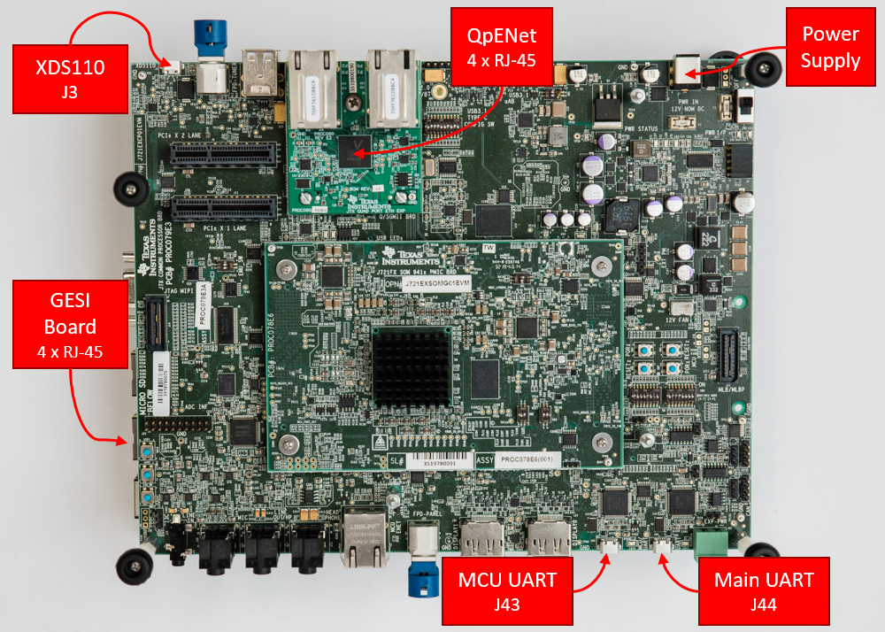
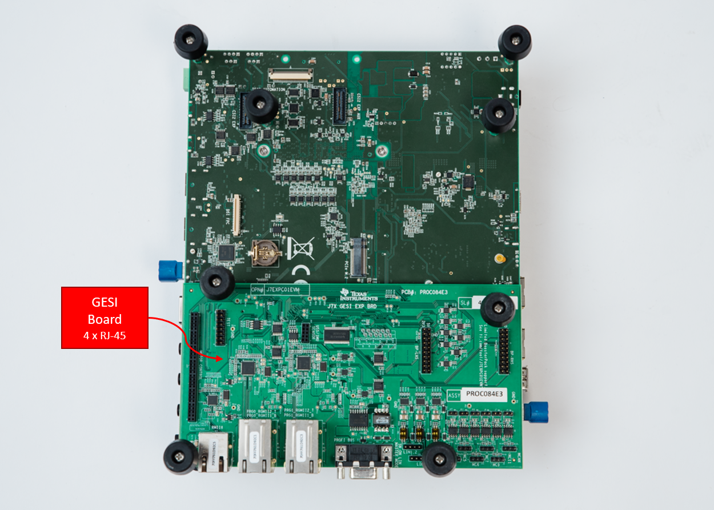
There are four RGMII PHYs in the J721E GESI board as shown in the following image. They will be referred to as MAC Port 1, MAC Port 3, MAC Port 4 and MAC Port 8 throughout this document.
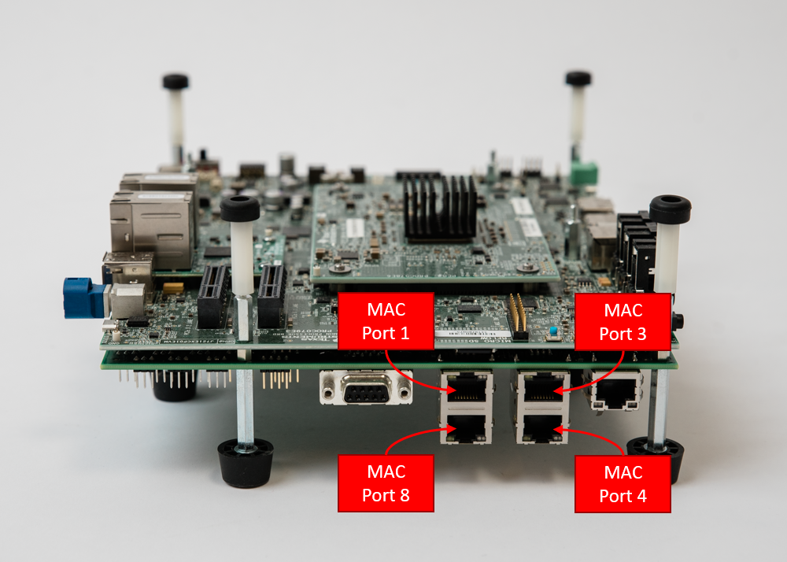
Please refer to the SDK Description for details about installation and getting started of J721E EVM.
Note: GESI expansion board is also available in J7200 EVM, but only one MAC port is routed to the CPSW5G in J7200, hence GESI board is not enabled and used by default in the Ethernet Firmware for J7200.
In the event that you want to disable GESI board functionality for J721E, please make sure to only use the 4 MAC ports defined on the Quad-Port Eth Expansion board defined in the next section.
Following changes need to be incorporated in order to disable GESI board while running EthFw:
gEthAppPorts stores all MAC ports that EthFw has enabled. It must be modified as shown below:
gEthAppSwitchPorts which stores MAC ports with gPTP support, must be modified as shown below:
MAC only ports should also not be configured in gEthApp_virtPortCfg since it uses ETHREMOTECFG_MAC_PORT_1 and ETHREMOTECFG_MAC_PORT_4 which are mapped to the GESI Board. One must comment out/remove the macro ENABLE_MAC_ONLY_PORTS to disable MAC Only support. This macro is defined in <ethfw>/apps/app_remoteswitchcfg_server/concerto.mak for EthFw server and in <ethfw>/apps/app_remoteswitchcfg_client/concerto.mak for RTOS client.
The Quad-Port Eth expansion board in J721E EVM provides four MAC ports in addition to the four MAC ports in GESI board.
It enables four MAC ports: MAC Port 2, MAC Port 5, MAC Port 6 and MAC Port 7.

Please refer to the SDK for more details about installation and getting started on J721E EVM.
The Quad-Port Eth expansion board provides the connectivity to the four MAC ports in J7200's CPSW5G: MAC Port 1, MAC Port 2, MAC Port 3 and MAC Port 4.

Please refer to the SDK for more details about installation and getting started on J7200 EVM.

Currently, Ethernet Firmware supports only one Quad-Port Eth expansion board connected in expansion connectors labeled as ENET-EXP-1.
It enables four MAC ports: MAC Port 1, MAC Port 3, MAC Port 4 and MAC Port 5.

Please refer to the SDK for more details about installation and getting started on J784S4 EVM.
Below listed dependencies are part of Processor SDK package.
Platform Development Kit (PDK) is a component within the Processor SDK RTOS which provides Chip Support Library (CSL), Low-Level Drivers (LLD), Boot, Diagnostics, etc.
The following sections list the PDK subcomponents that are required by the EthFw package.
Please refer to the Release Notes that came with this release for the compatible version of PDK/SDK.
Chip Support Library (CSL) implements peripheral register level and functional level APIs. CSL also provides peripheral base addresses, register offset, C macros to program peripheral registers.
EthFw uses CSL to determine peripheral addresses and program peripheral registers.
Unified DMA (UDMA) is an integral part of the Jacinto 7 devices and is in charge of moving data between peripherals and memory.
PDK includes an UDMA LLD which provides APIs that the Enet LLD relies on to send and receive packets to the CPSW's host port.
This is Ethernet driver module used to program the CPSW5G or CPSW9G (Switch) IP. EthFw receives commands/configuration from application and uses Enet LLD to configure CPSW5G/CPSW9G.
For references to the Enet LLD driver, please refer Enet LLD User Guide and PHY Integration Guide
Enet LLD supports other Ethernet peripherals available in TI SoCs and provides a unified interface to program them.
lwIP is a free TCP/IP stack developed by Adam Dunkels at the Swedish Institute of Computer Science (SICS) and licensed under a modified BSD license (completely open-source).
The focus of the LwIP TCP/IP implementation is to reduce RAM usage while keeping a full scale TCP/IP stack thus making it suitable for our requirements.
LwIP supports the following features:
Starting in SDK 8.0, Ethernet Firmware has been migrated to lwIP stack. The actual integration of lwIP into J721E/J7200/J784S4/J742S2 devices is done through Enet LLD, which implements the lwIP netif driver interface.
The Enet LLD lwIP driver interface implementation can be located at: <pdk>/packages/ti/drv/enet/lwipif/src.
The lwIP configuration file (lwipopts.h) contains the lwIP stack features that are enabled by default in the Enet LLD driver implementation, such as TCP, UDP, DHCP, etc. It's located at <pdk>/packages/ti/transport/lwip/lwip-port/freertos/include/lwipopts.h. User should also refer to this file if interested on enabling any of the different lwIP debug options.
The lwIP pool configuration file (lwippools.h) contains the different pools and their sizes required by the Enet LLD lwIP interface implementation. This file is located at <pdk>/packages/ti/drv/transport/lwip/lwip-port/freertos/include/lwippools.h.
Starting from SDK 9.0, a new gPTP stack is integrated on top of Enet LLD in PDK, it can be located at: <pdk>/packages/ti/transport/tsn/tsn-stack. The previous gPTP test stack used in SDK 8.x and older releases is no longer supported and has been fully removed from both, Enet LLD and Ethernet Firmware.
The new gPTP stack provides time synchronization for CPSW5G/CPSW9G on Main R5F0 core 0 for J721E, J7200, J784S4 and J742S2. The stack is composed of the following modules:
This stack can be used for production and testing purposes. For more information about the stack, please refer to PDK documentation:
The utilisation of these resources by gPTP stack on Ethernet Firmware is as follows:
| Resource | Count | gPTP Usage (mcu2_0) |
|---|---|---|
| TX channel | 1 | To transmit PTP packets |
| RX flow | 1 | To receive PTP packets (filtered by PTP multicast and EtherType) |
| MAC address | 1 | Shared with TCP/IP lwIP netif |
Enet LLD lwIP interface implementation provides a hook to let application process a packet and indicate whether the packet needs additional handling (i.e. be passed to the lwIP stack) or if the packet can be recycled (i.e. already handled by the application).
This feature enables Ethernet Firmware to implement Proxy ARP functionality needed to respond to ARP Request packets on behalf of Ethernet Firmware's remote core clients as broadcast packets are passed exclusively to Main R5F core 0, not to each individual remote core.
Ethernet Firmware sets up a dedicated UDMA RX flow where packets that have ARP EtherType and broadcast destination MAC address are routed to. While lwIP interface is processing packets from this RX flow, it will call the packet processing function registered by Ethernet Firmware. Ethernet Firmware then checks if the packet is meant for any of its remote core clients, if so, it responds on its behalf and packet is recycled as it needs not be passed to lwIP stack. If the packet is not meant to any of the remote cores, it's simply passed to the lwIP stack, ARP request packets meant for Ethernet Firmware itself fall into this processing category.
Ethernet Firmware requires the following SafeRTOS kernel versions, depending on the SoC being used.
| SoC | ISA | SafeRTOS package version |
|---|---|---|
| J721E | R5F | 009-004-199-024-219-001 |
| J7200 | R5F | 009-002-199-024-243-001 |
| J784S4 | R5F | 009-004-199-024-251-001 |
Note: There is no SafeRTOS support for J742S2
Install Code Composer Studio and setup a Target Configuration for use with J721E, J7200 or J784S4 EVM. Refer to the instructions in CCS Setup section of the Processor SDK RTOS documentation.
Note: There is no CCS support for J742S2
Ethernet Firmware and its dependencies are part of the SDK, separate installation is not required.
Post installation of SDK, the following directory would be created. Please note that this is an indicative snap-shot, modules could be added/modified.
The top-level EthFw makefile as well as the auxiliary makefiles for build flags (ethfw_build_flags.mak) and build paths (ethfw_tools_path.mak) can be found at the EthFw top-level directory.
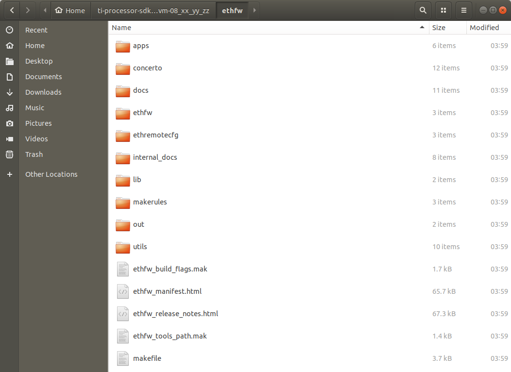
The utils directory contains miscellaneous utilities required by the EthFw applications.
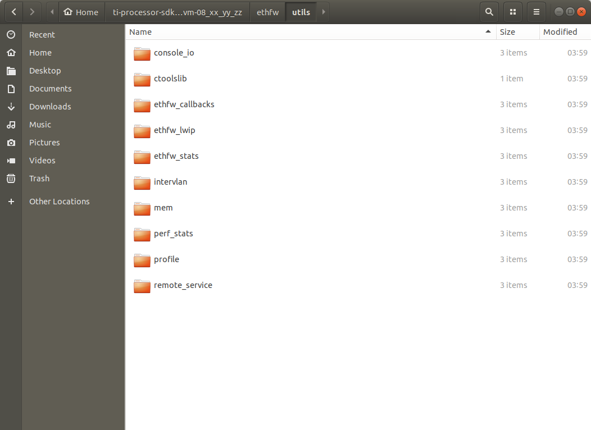
Source code of the EthFw demo applications is in the apps directory. For instance, below image shows the directory structure of the server application which implements L2 switch, inter-VLAN routing, etc.
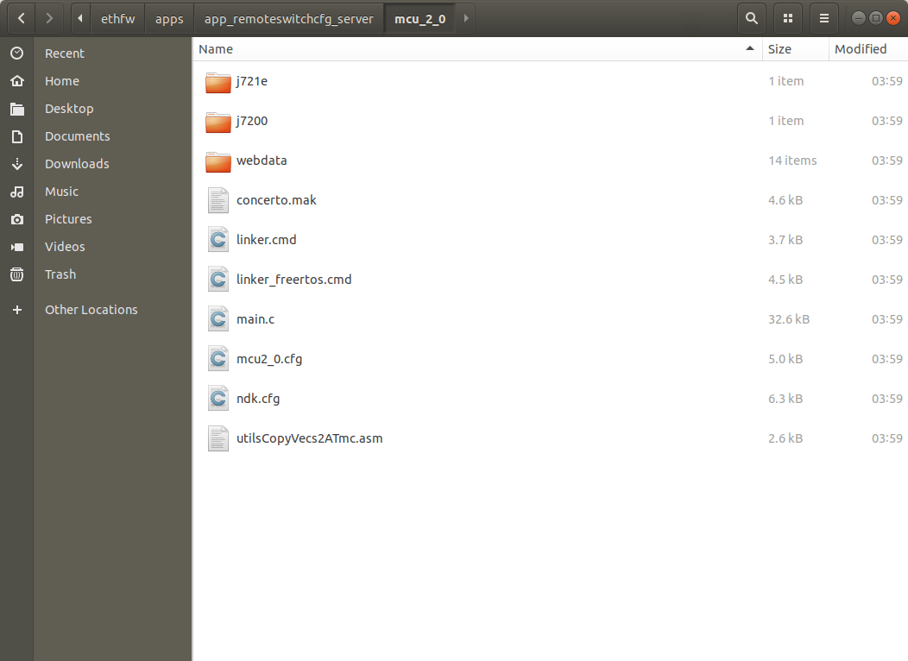
Pre-compiled binaries are also provided as part of the EthFw release, which can be found in the out directory. For instance, below image shows the EthFw output directory structure with pre-compiled server and client binaries.
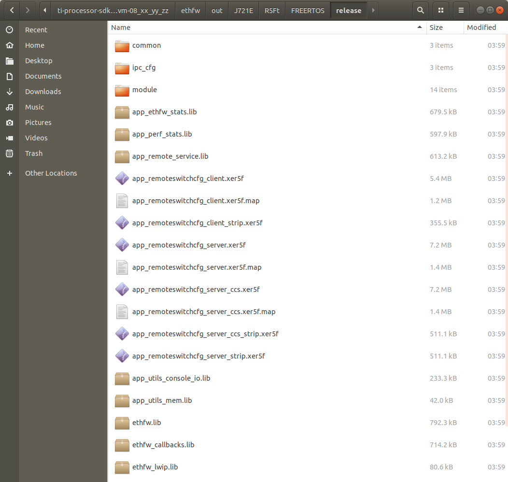
Refer to EthFw Demo Applications section for a full list of EthFw demo applications.
EthFw employs Concerto makefile-based build system. When building on a Windows based machine, tools such as Cygwin could be used.
The tool paths required by the build system are defined in <ethfw>/ethfw_tools_path.mak. When building ETHFW component standalone, user must provide the location of the compiler through PSDK_TOOLS_PATH variable (by default it's set to ../ethfw):
make ethfw_all BUILD_SOC_LIST=<SOC> PSDK_TOOLS_PATH=$HOME/ti
The above will generate binary for running ethernet firmware on the Main R5F 0 Core 0. To run ethernet firmware on Main R5F 0 Core 1, user must provide an additional ETHFW_RTOS_MCU2_1_SUPPORT flag.
make ethfw_all BUILD_SOC_LIST=<SOC> PSDK_TOOLS_PATH=$HOME/ti ETHFW_RTOS_MCU2_1_SUPPORT=yes
Note: Ethernet Firmware support on the Main R5F 0 Core 1 is provided only for J721E and J784S4 SOCs.
User can run the following command to get the full list of valid targets:
make help
The make commands listed below require the environment setup according to Setup Environment section.
Build EthFw components as well as its dependencies, including PDK, lwIP, etc.
For J721E:
make ethfw_all BUILD_SOC_LIST=J721E
For J7200:
make ethfw_all BUILD_SOC_LIST=J7200
For J784S4:
make ethfw_all BUILD_SOC_LIST=J784S4
For J742S2:
make ethfw_all BUILD_SOC_LIST=J742S2
By default, above commands will build Ethernet Firmware for FreeRTOS.
Verbose build can be enabled by setting the SHOW_COMMANDS variable as shown below:
make ethfw_all BUILD_SOC_LIST=<SOC> SHOW_COMMANDS=1
On successful compilation, the output folder would be created at <ethfw>/out.
The RTOS used in Ethernet Firmware build is determined by the following flags, which can be set in ethfw_build_flags.mk or passed to the make command:
BUILD_APP_FREERTOS enables FreeRTOS build of EthFw and RTOS client.BUILD_APP_SAFERTOS enables SafeRTOS build of EthFw and RTOS client. It requires SafeRTOS kernel installed in SDK installation path.The location of the SafeRTOS package can be changed through the SAFERTOS_KERNEL_INSTALL_r5f_<SOC> variable in ethfw_tools_path.mak. The SafeRTOS version validated for each SoC can also be found in ethfw_tools_path.mak.
Build for SafeRTOS only, FreeRTOS build disabled:
make ethfw_all BUILD_SOC_LIST=<SOC> BUILD_APP_FREERTOS=no BUILD_APP_SAFERTOS=yes
Build for SafeRTOS and FreeRTOS:
make ethfw_all BUILD_SOC_LIST=<SOC> BUILD_APP_FREERTOS=yes BUILD_APP_SAFERTOS=yes
Ethernet Firmware for QNX OS client integration on A72 is built with the standard make command:
make ethfw_all BUILD_SOC_LIST=<SOC>
It's worth noting that above command also builds EthFw binaries for integration with Linux and CCS, as well as RTOS client.
Alternatively, user may choose to build Ethernet Firmware server for QNX only using below command:
make ethfw_server_qnx BUILD_SOC_LIST=<SOC>
There are two main differences between QNX and Linux builds of Ethernet Firmware:
The make commands listed below require the environment setup according to Setup Environment section.
Clean EthFw components as well as its dependencies:
make ethfw_all_clean BUILD_SOC_LIST=<SOC>
Remove EthFw build output directory only.
make scrub
make ethfw_all BUILD_SOC_LIST=<SOC> PROFILE=debug
make ethfw_all BUILD_SOC_LIST=<SOC> PROFILE=release
The example applications use different memories and this could be changed and/or re-configured via linker command files.
<ethfw_xx_yy_zz_bb>/apps/app_<name>/<core>/linker_mem_map.cmd<ethfw_xx_yy_zz_bb>/apps/app_<name>/<core>/linker.cmdRefer to EthFw Demo Applications section for a full list of EthFw demo applications.
For detailed steps to load and run the demo application, please refer to the Demo Setup section.
Delete the complete ethfw_xx_yy_zz_bb folder.
Please refer to the Ethernet Firmware Release Notes.
| Flag | Description |
|---|---|
-O0 | Optimization level 0 |
-D=MAKEFILE_BUILD | Makefile-based build type |
-D=TARGET_BUILD=2 | Identifies the build profile as 'debug' |
-D_DEBUG_=1 | Identifies as debug build |
-D=ETHFW_CCS | Identifies ETHFW build for CCS boot, disabled for U-Boot/SBL build |
-D=SOC_J721E | Identifies the J721E SoC type |
-D=J721E | Identifies the J721E device type |
-D=SOC_J7200 | Identifies the J7200 SoC type |
-D=J7200 | Identifies the J7200 device type |
-D=SOC_J784S4 | Identifies the J784S4 SoC type |
-D=J784s4 | Identifies the J784S4 device type |
-D=SOC_J742S2 | Identifies the J742S2 SoC type |
-D=J742S2 | Identifies the J742S2 device type |
-D=R5Ft="R5Ft" | Identifies the core type as ARM R5F with Thumb2 enabled |
-D=TARGET_NUM_CORES=2 | Identifies the core id as mcu2_0 (ETHFW server) |
-D=TARGET_NUM_CORES=3 | Identifies the core id as mcu2_1 (RTOS client) |
-D=TARGET_ARCH=32 | Identifies the target architecture as 32-bit |
-D=ARCH_32 | Identifies the architecture as 32-bit |
-D=FREERTOS | Identifies as FreeRTOS operating system build |
-D=SAFERTOS | Identifies as SafeRTOS operating system build |
-D=ETHFW_PROXY_ARP_SUPPORT | Enable Proxy ARP support on EthFw server |
-D=ETHFW_CPSW_VEPA_SUPPORT | Enable VEPA support on EthFw server (only applicable to J784S4 and J742S2) |
-D=ETHAPP_ENABLE_INTERCORE_ETH | Enable Intercore Virtual Ethernet support (disabled in QNX images) |
-D=ETHAPP_ENABLE_IPERF_SERVER | Enable lwIP iperf server support (TCP only) |
-D=ENABLE_QSGMII_PORTS | Enable QSGMII ports in QpENet expansion board (applicable only to J721E) |
-D=ETHFW_BOOT_TIME_PROFILING | Enable special ETHFW configuration for boot time profiling (TI internal) |
-D=ETHFW_DEMO_SUPPORT | Enable ETHFW demos, such as hardware and software interVLAN, GUI configurator tool, etc. |
-D=ETHFW_MONITOR_SUPPORT | Enable ETHFW Monitor to detect and handle any HW lockups and perform reset recovery. |
-D=ETHFW_MTS_SUPPORT | Enable ETHFW Multicore Timesync support. |
-D=ETHFW_MTS_DEMO_TEST | Enable Multicore Timesync Demo test on RTOS client. |
Other common flags:
| Flag | Description |
|---|---|
-O3 | Optimization level 3 |
-D=MAKEFILE_BUILD | Makefile-based build type |
-D=TARGET_BUILD=1 | Identifies the build profile as 'release' |
-D=ETHFW_CCS | Identifies ETHFW build for CCS boot, disabled for U-Boot/SBL build |
-D=SOC_J721E | Identifies the J721E SoC type |
-D=J721E | Identifies the J721E device type |
-D=SOC_J7200 | Identifies the J7200 SoC type |
-D=J7200 | Identifies the J7200 device type |
-D=SOC_J784S4 | Identifies the J784S4 SoC type |
-D=J784S4 | Identifies the J784S4 device type |
-D=SOC_J742S2 | Identifies the J742S2 SoC type |
-D=J742S2 | Identifies the J742S2 device type |
-D=R5Ft="R5Ft" | Identifies the core type as ARM R5F with Thumb2 enabled |
-D=TARGET_NUM_CORES=2 | Identifies the core id as mcu2_0 (ETHFW server) |
-D=TARGET_NUM_CORES=3 | Identifies the core id as mcu2_1 (RTOS client) |
-D=TARGET_ARCH=32 | Identifies the target architecture as 32-bit |
-D=ARCH_32 | Identifies the architecture as 32-bit |
-D=FREERTOS | Identifies as FreeRTOS operating system build |
-D=SAFERTOS | Identifies as SafeRTOS operating system build |
-D=ETHFW_PROXY_ARP_SUPPORT | Enable Proxy ARP support on EthFw server |
-D=ETHFW_CPSW_VEPA_SUPPORT | Enable VEPA support on EthFw server (only applicable to J784S4 and J742S2) |
-D=ETHAPP_ENABLE_INTERCORE_ETH | Enable Intercore Virtual Ethernet support (disabled in QNX images) |
-D=ETHAPP_ENABLE_IPERF_SERVER | Enable lwIP iperf server support (TCP only) |
-D=ENABLE_QSGMII_PORTS | Enable QSGMII ports in QpENet expansion board (applicable only to J721E) |
-D=ETHFW_BOOT_TIME_PROFILING | Enable special ETHFW configuration for boot time profiling (TI internal) |
-D=ETHFW_DEMO_SUPPORT | Enable ETHFW demos, such as hardware and software interVLAN, GUI configurator tool, etc. |
-D=ETHFW_MONITOR_SUPPORT | Enable ETHFW Monitor to detect and handle any HW lockups and perform reset recovery. |
-D=ETHFW_MTS_SUPPORT | Enable ETHFW Multicore Timesync support. |
-D=ETHFW_MTS_DEMO_TEST | Enable Multicore Timesync Demo test on RTOS client. |
Other common flags:
| Device Family | Variant | Known by other name |
|---|---|---|
| Jacinto 7 | J721E | - |
| J7200 | - | |
| J784S4 | - | |
| J742S2 | - |
| Revision | Date | Author | Description ------— |
|---|---|---|---|
| 0.1 | 01 Apr 2019 | Prasad J, Misael Lopez | Created for v.0.08.00 |
| 0.2 | 02 Apr 2019 | Prasad J | 0.8 Docs review meeting fixes |
| 0.3 | 12 Jun 2019 | Prasad J | Updates for EVM demo (.85 release) |
| 0.4 | 17 Jul 2019 | Misael Lopez | Updates for v.0.09.00 |
| 0.5 | 15 Oct 2019 | Misael Lopez, Santhana Bharathi | Updates for v.1.00.00 |
| 1.0 | 28 Jan 2020 | Misael Lopez | Updates for SDK 6.02.00 |
| 1.1 | 31 Aug 2020 | Misael Lopez | Added J7200 support for SDK 7.01 EA |
| 1.2 | 02 Nov 2020 | Misael Lopez | Updated for Enet LLD migration |
| 1.3 | 01 Dec 2021 | Nitin Sakhuja | Adedd Inter-core Ethernet support for SDK 8.1 |
| 1.4 | 07 Dec 2021 | Misael Lopez | Adedd MAC-only, server and client doc |
| 1.5 | 01 Jul 2021 | Misael Lopez | Updates for J784S4 support and SDK 8.02.01 |
| 1.6 | 10 Feb 2023 | Misael Lopez | Added SafeRTOS build info |
| 1.7 | 29 Nov 2023 | Misael Lopez | SDK 9.1 and VLAN, trace support |
| 1.8 | 28 Aug 2024 | Vaibhav Jindal | Added J742S2 support for SDK 10.0.1 |
 1.8.14
1.8.14